Plug-in Manager
Design and implementation notes
started: November 2, 2002
contributors: <av@netscape.com> <beppe@netscape.com> <peterl@netscape.com> <serge@netscape.com>
Table of contents
As of 12.03.2002:
Draft for broader exposure. In progress. Reviews and contributions are welcome.
Summary
Plug-ins are shared objects made by third parties that are compliant with Netscape Plug-in API (NPAPI) and are aimed to be powerful extensions to the basic browser functionality. For example, in many cases they are used to play various types of media content out of the Internet. Plug-ins can be invoked with the 'object' tag whose parameters and attributes specify the way the media object should be played. For more details please refer to the Mozilla documentation on using NPAPI, HTML object tag specification and XHTML 2.0 specification where the object element constructs undergo significant changes. Compliance with the latter spec is one of the major goals for the Mozilla project.
Plug-ins were first introduced by Netscape several years ago and became a popular addition to various browsers since. Nowadays plug-ins are complex software products capable of handling many media formats and significantly improving user experience. Now users may have tens of plug-ins installed on their systems, some of those plug-ins may compete for certain MIME types, some may not always be appropriate, some may be capable of handling several types. Under such circumstances having a tool which would allow to manage installed plug-ins becomes more and more desirable.
The goal of the present document is to summarize needs and propose details of implementation of such a tool, the plug-in manager.
Description and design overview
Plug-in manager is a browser service provided by Mozilla plug-in module and available for other components via service manager. The service interface is scriptable and accessible from both JavaScript and C++. XUL based and embedding applications can use it to create their own user interfaces, either XUL or native.
The service is designed to fulfill the following basic requirements:
Plug-in manager browser service interface
All methods needed to manipulate installed plug-ins are provided by nsIPluginManagerService interface. Some auxiliary objects needed by the plug-in manager are also introduced: nsIPluginMIMEType, nsIPluginTag, nsIBlockedPluginSite and nsIBlockedPluginSiteArray. The relationship between all these objects is as follows. The nsIPluginManagerService will give an access to all installed plug-ins and will host the list of nsIPluginTag objects as well as nsIBlockedPluginSiteArray object. Individual plug-ins will be represented by nsIPluginTag objects which in turn will allow to access and operate this plug-in MIME type settings, so nsIPluginTag will host the array of nsIPluginMIMEType objects.
See Appendix II for detailed descriptions of the interfaces.
Back end, storing configuration information, integration and dependencies
This section is a placeholder for the details of the following:
Disabled and missing plug-in notification
This section is yet to be written in details, possibly worth creating a separate document. User notification of a plug-in, either installed or missing, is especially important if a plug-in is coded to be hidden, e.g. background music. Here are some thoughts. The term 'default plug-in' is used here loosely, just by tradition, it may in fact be an inherent functionality of the Mozilla plug-in module itself.
Special means should be available so that a user knows he is potentially missing some media content.
1. Pop-up coming from the Default plug-in. It can be turned off in the plug-in manager. The Default plug-in functionality should be extended to installed but disabled plug-ins.
2. Every time, no matter what, if a page requiring plug-ins is loaded, a small icon appears on the status bar. Clicking on this icon will launch a dialog box saying that the page is using plug-ins listing MIME types, and giving a user an opportunity to start the plug-in manager and possibly some other options like disabling plug-ins on this page for the session, adding this page to the blocked plug-in sites list, trying to find and install the plug-in or enable disabled plug-in. This is particularly useful if the page uses hidden plug-in which does not have any visual appearance. This will be a good alternative to the annoying pop-up notification of a missing plug-in.
3. 'Broken plug-in' or 'puzzle piece' icon should have a distinctive variant for the case when user has the plug-in installed but disabled. The default plug-in will give an option to enable the plug-in if user clicks on the icon.
Open issues
Appendix I. User interface example
This is an example of plug-in manager user interface which reflects most of the functionality the plug-in manager provides via its services. It does not necessarily mean that everything should be present in specific implementations, but it can be considered as a working draft for Mozilla own implementation of the plug-in manager. Images produced by the Developer Studio resource editor are used in the examples below for the purposes of the present document only.
I. Starting the plug-in manager
Just as any other browser tool the plug-in manager can be launched using Tools menu:
Or alternatively, it can be launched from the Preferences window whose plug-in related panel will have general plug-in options and a button to start the plug-in manager:
The plug-in manager window contains several tabs each of which allows to configure different aspects of plug-ins.
II. General plug-in options
The General tab allows to set some simple options which are general for all plug-ins, such as disabling all plug-ins for browser or mail and news or turning on/off user confirmation box before starting plug-ins. Double click on the attachment in mail will probably obey browser setting since it is supposed to be opened in a new browser window.
Other, less obvious general plug-in options such as missing plug-in notification or using PFS can be found under the Advanced tab.
III. Plug-ins options
This tab shows an overall picture of installed plug-ins and their MIME types. The page gives user an opportunity to change settings for individual plug-ins and individual MIME types within each plug-in. Here one will find the list of all installed plug-ins with the MIME types plug-ins can handle, and see their status and various information. Most importantly, whether the plug-in is enabled or not, and what MIME types it is allowed to handle. Check boxes allow to enable/disable plug-ins or individual MIME types for the selected plug-in. Note for example, that two plug-ins (XYZ and QuickTime) are registered for the same MIME type -- 'video/mpeg', but it is disabled on XYZ plug-in list and enable on QuickTime list.
Enabling previously disabled MIME type with 'Enable MIME type' check box may cause a conflict if some other plug-in has the same type enabled. A notification will be fired, at which time user will have an opportunity to make a decision on which plug-in handles this MIME type.
IV. MIME Types options
This page lists all the MIME types available from all installed plug-ins. In the information box there is info on the selected type: what plug-ins can handle it and which plug-in actually does handle it. The sample window above shows the situation when two different plug-ins can do the job. The page allows user either to enable/disable certain MIME type or like in this example to choose which plug-in should be invoked when the MIME type is hit on the net. The Advanced Settings dialog provides means for doing that:
V. Internet Sites options
This tab contains a list of web sites on which all plug-ins are desired to be blocked. Blocking can mean everything or just specified MIME types. Edit button brings up a configuration dialog box where user can add or remove MIME types to be blocked from this site:
Convenient way to add a particular site to the list would be adding this option to the context menu, so user can do that without launching the plug-in manager but rather just right clicking on the page while browsing the net.
Design and implementation notes
started: November 2, 2002
contributors: <av@netscape.com> <beppe@netscape.com> <peterl@netscape.com> <serge@netscape.com>
Table of contents
- Status of the document
- Summary
- Description and design overview
- Plug-in manager browser service interface
- Back end, storing configuration information, integration and dependencies
- Disabled and missing plug-in notification
- Open issues
- Appendix I. User interface example
- Appendix II. Plug-in manager IDL interfaces
As of 12.03.2002:
Draft for broader exposure. In progress. Reviews and contributions are welcome.
Summary
Plug-ins are shared objects made by third parties that are compliant with Netscape Plug-in API (NPAPI) and are aimed to be powerful extensions to the basic browser functionality. For example, in many cases they are used to play various types of media content out of the Internet. Plug-ins can be invoked with the 'object' tag whose parameters and attributes specify the way the media object should be played. For more details please refer to the Mozilla documentation on using NPAPI, HTML object tag specification and XHTML 2.0 specification where the object element constructs undergo significant changes. Compliance with the latter spec is one of the major goals for the Mozilla project.
Plug-ins were first introduced by Netscape several years ago and became a popular addition to various browsers since. Nowadays plug-ins are complex software products capable of handling many media formats and significantly improving user experience. Now users may have tens of plug-ins installed on their systems, some of those plug-ins may compete for certain MIME types, some may not always be appropriate, some may be capable of handling several types. Under such circumstances having a tool which would allow to manage installed plug-ins becomes more and more desirable.
The goal of the present document is to summarize needs and propose details of implementation of such a tool, the plug-in manager.
Description and design overview
Plug-in manager is a browser service provided by Mozilla plug-in module and available for other components via service manager. The service interface is scriptable and accessible from both JavaScript and C++. XUL based and embedding applications can use it to create their own user interfaces, either XUL or native.
The service is designed to fulfill the following basic requirements:
- ability to disable and enable plug-ins on plug-in basis
- ability to disable and enable plug-ins on MIME type basis
- ability to disable and enable plug-ins on URL basis
- ability to resolve conflicts if more than one plug-in is capable of handling a specific MIME type
- ability to add MIME types to plug-ins
- ability to add extension to MIME type association
- ability to choose from different versions of the same plug-in if PLID is not specified in the object tag
Plug-in manager browser service interface
All methods needed to manipulate installed plug-ins are provided by nsIPluginManagerService interface. Some auxiliary objects needed by the plug-in manager are also introduced: nsIPluginMIMEType, nsIPluginTag, nsIBlockedPluginSite and nsIBlockedPluginSiteArray. The relationship between all these objects is as follows. The nsIPluginManagerService will give an access to all installed plug-ins and will host the list of nsIPluginTag objects as well as nsIBlockedPluginSiteArray object. Individual plug-ins will be represented by nsIPluginTag objects which in turn will allow to access and operate this plug-in MIME type settings, so nsIPluginTag will host the array of nsIPluginMIMEType objects.
See Appendix II for detailed descriptions of the interfaces.
Back end, storing configuration information, integration and dependencies
This section is a placeholder for the details of the following:
- where to store plug-in information
- where to implement XUL templates
- what are the dependencies and integration with the rest of the application
- what would be the default set of the plug-in options in case some embedders don’t bother about managing plug-ins
Disabled and missing plug-in notification
This section is yet to be written in details, possibly worth creating a separate document. User notification of a plug-in, either installed or missing, is especially important if a plug-in is coded to be hidden, e.g. background music. Here are some thoughts. The term 'default plug-in' is used here loosely, just by tradition, it may in fact be an inherent functionality of the Mozilla plug-in module itself.
Special means should be available so that a user knows he is potentially missing some media content.
1. Pop-up coming from the Default plug-in. It can be turned off in the plug-in manager. The Default plug-in functionality should be extended to installed but disabled plug-ins.
2. Every time, no matter what, if a page requiring plug-ins is loaded, a small icon appears on the status bar. Clicking on this icon will launch a dialog box saying that the page is using plug-ins listing MIME types, and giving a user an opportunity to start the plug-in manager and possibly some other options like disabling plug-ins on this page for the session, adding this page to the blocked plug-in sites list, trying to find and install the plug-in or enable disabled plug-in. This is particularly useful if the page uses hidden plug-in which does not have any visual appearance. This will be a good alternative to the annoying pop-up notification of a missing plug-in.
3. 'Broken plug-in' or 'puzzle piece' icon should have a distinctive variant for the case when user has the plug-in installed but disabled. The default plug-in will give an option to enable the plug-in if user clicks on the icon.
Open issues
- PLID -- the PLID story is still not ended, whatever we eventually decide with it should be correctly reflected in the Plug-in Manager
- User notification -- if plug-in is missing or disabled, displaying anything reflecting this fact is not always correct, object tag with no codebase attribute does not do anything at all
- Some plug-ins have their own configuration utility (QuickTime) -- how to behave in such a case
- Internet site management -- in addition to have blocked sites could also be convenient to have unblocked sites, e.g. if user wants to block Flash everywhere except one or two his favorite Flash sites. Then it would make sense to introduce a 'white list' along with 'black list' of the internet locations
- ...more to come...
Appendix I. User interface example
This is an example of plug-in manager user interface which reflects most of the functionality the plug-in manager provides via its services. It does not necessarily mean that everything should be present in specific implementations, but it can be considered as a working draft for Mozilla own implementation of the plug-in manager. Images produced by the Developer Studio resource editor are used in the examples below for the purposes of the present document only.
I. Starting the plug-in manager
Just as any other browser tool the plug-in manager can be launched using Tools menu:
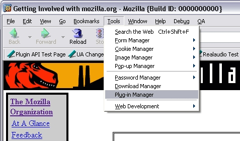
Or alternatively, it can be launched from the Preferences window whose plug-in related panel will have general plug-in options and a button to start the plug-in manager:
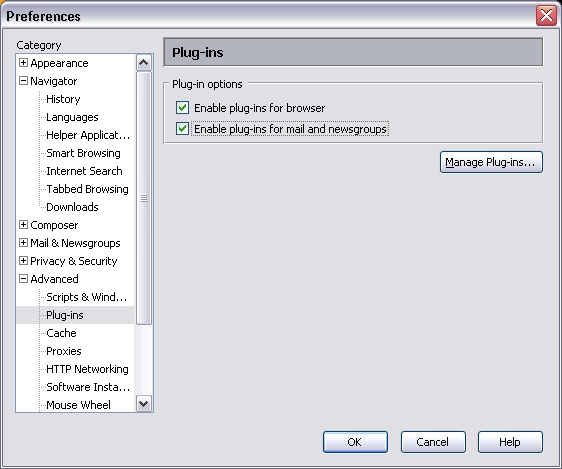
The plug-in manager window contains several tabs each of which allows to configure different aspects of plug-ins.
II. General plug-in options
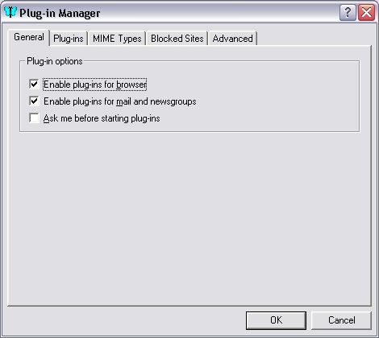
The General tab allows to set some simple options which are general for all plug-ins, such as disabling all plug-ins for browser or mail and news or turning on/off user confirmation box before starting plug-ins. Double click on the attachment in mail will probably obey browser setting since it is supposed to be opened in a new browser window.
Other, less obvious general plug-in options such as missing plug-in notification or using PFS can be found under the Advanced tab.
III. Plug-ins options
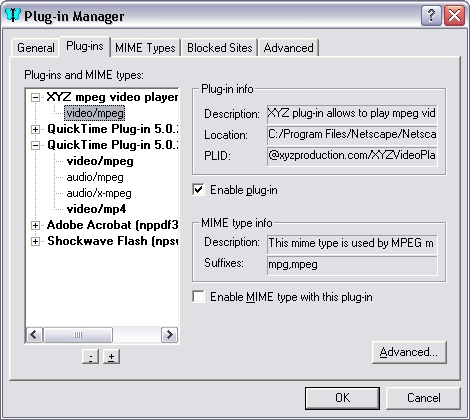
This tab shows an overall picture of installed plug-ins and their MIME types. The page gives user an opportunity to change settings for individual plug-ins and individual MIME types within each plug-in. Here one will find the list of all installed plug-ins with the MIME types plug-ins can handle, and see their status and various information. Most importantly, whether the plug-in is enabled or not, and what MIME types it is allowed to handle. Check boxes allow to enable/disable plug-ins or individual MIME types for the selected plug-in. Note for example, that two plug-ins (XYZ and QuickTime) are registered for the same MIME type -- 'video/mpeg', but it is disabled on XYZ plug-in list and enable on QuickTime list.
Enabling previously disabled MIME type with 'Enable MIME type' check box may cause a conflict if some other plug-in has the same type enabled. A notification will be fired, at which time user will have an opportunity to make a decision on which plug-in handles this MIME type.
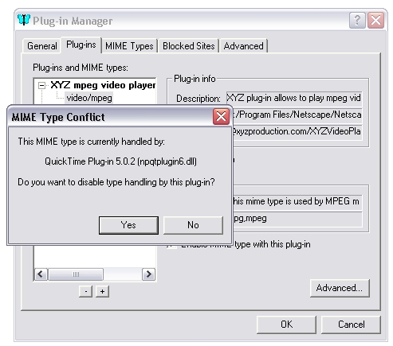
Depending on the user response the new setting will be reflected
in the plug-ins list view, in our example user clicked Yes, so the MIME type
will now be handled by XYZ plug-in:
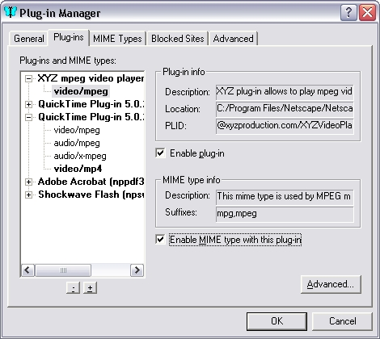
Advanced button brings up an Advanced Setting dialog where
more plug-in and its MIME type options can be set, e.g. enabling/disabling
full page mode for this plug-in or editing file extension list for some of
the plug-in MIME types:
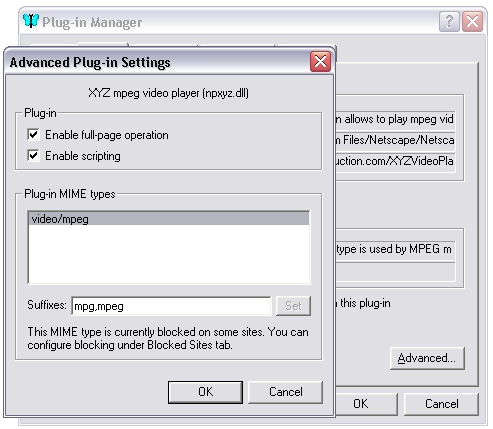
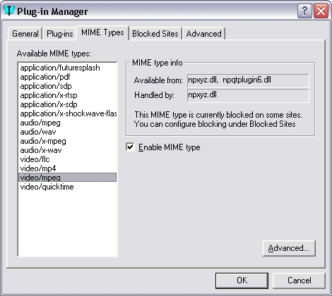
This page lists all the MIME types available from all installed plug-ins. In the information box there is info on the selected type: what plug-ins can handle it and which plug-in actually does handle it. The sample window above shows the situation when two different plug-ins can do the job. The page allows user either to enable/disable certain MIME type or like in this example to choose which plug-in should be invoked when the MIME type is hit on the net. The Advanced Settings dialog provides means for doing that:
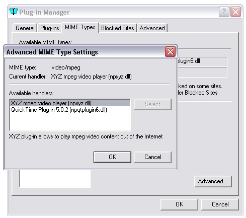
User can select a plug-in that he wants to take over when this
MIME type is met. Different versions of the same plug-in can also be
in this list and selectable.V. Internet Sites options
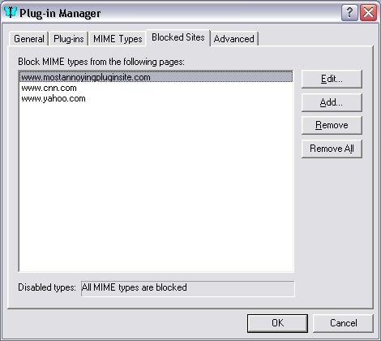
This tab contains a list of web sites on which all plug-ins are desired to be blocked. Blocking can mean everything or just specified MIME types. Edit button brings up a configuration dialog box where user can add or remove MIME types to be blocked from this site:
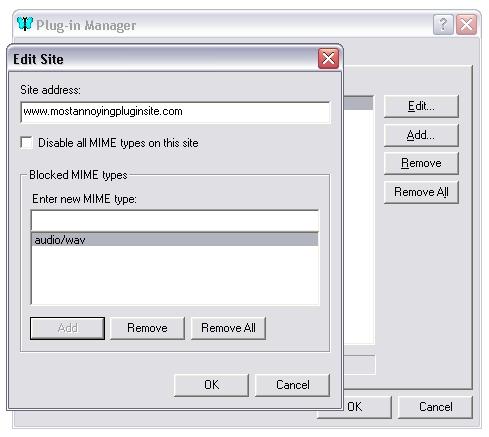
Convenient way to add a particular site to the list would be adding this option to the context menu, so user can do that without launching the plug-in manager but rather just right clicking on the page while browsing the net.
VI. Advanced options
This tab hosts some general plug-in options that are not listed under General tab and are intended for advanced users.
This tab hosts some general plug-in options that are not listed under General tab and are intended for advanced users.
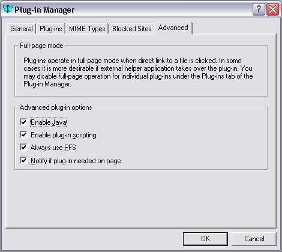
Appendix II. Plug-in manager IDL interfaces
This is a preliminary view of what the interfaces can look like.
There already are interfaces in the Mozilla DOM code describing MIME types and plug-ins, so it would probably make sense to utilize those interfaces and derive our new interfaces needed by the plug-in manager service from them.
The existing interfaces are:
interface nsIDOMMimeType : nsISupportsWe are going to introduce the following new interfaces:
{
readonly attribute DOMString description;
readonly attribute nsIDOMPlugin enabledPlugin;
readonly attribute DOMString suffixes;
readonly attribute DOMString type;
};
interface nsIDOMPlugin : nsISupports
{
readonly attribute DOMString description;
readonly attribute DOMString filename;
readonly attribute DOMString name;
readonly attribute unsigned long length;
nsIDOMMimeType item(in unsigned long index);
nsIDOMMimeType namedItem(in DOMString name);
};
1. nsIPluginMIMEType and nsIPluginMIMETypeArray
Plug-in MIME type is the object describing the individual MIME type in a specific plug-in, and objects of this type form an array hosted by plug-in tag.
interface nsIPluginMimeType : nsIDOMMimeType2. nsIPluginTag
{
// flag indicating that this type has been added by user
readonly attribute boolean added;
// adds suffix to the file extension array
boolean addExtension(in DOMString extension);
// removes suffix from the file extension array
boolean removeExtension(in DOMString extension);
};
Plugin tag is a container for individual plug-in attributes, some are traditional, some -- new, like PLID.
interface nsIPluginTag : nsIDOMPlugin3. nsIBlockedPluginSite and nsIBlockedPluginSiteArray
{
// unique plug-in identifier
// this will probably be more complex than just a string
readonly attribute string plid;
// location of the plug-in file on the system
readonly attribute nsIFile path;
// flags specifying the plug-in state
const long FLAG_ENABLED_BROWSER = 0x1;
const long FLAG_ENABLED_MAILNEWS = 0x2;
const long FLAG_ENABLED_COMPOSER = 0x4;
const long FLAG_SCRIPTABLE = 0x8;
const long FLAG_SCRIPTING_ENABLED = 0x10;
const long FLAG_FULLPAGE_ENABLED = 0x20;
// options for individual plug-in
attribute long flags;
// add new MIME type
boolean addType(in nsIDOMMimeType type);
// remove MIME type that has been previously added
boolean removeAddedType(in nsIDOMMimeType type);
};
Blocked sites is the object listing URL addresses of blocked sites
interface nsIBlockedPluginSite : nsISupports4. nsIPluginManagerService
{
// site address
attribute nsIURI uri;
// flag indicating that everything is blocked from this site
attribute boolean blockAll;
// array of MIME types which are blocked from this site
readonly attribute nsIDOMMimeTypeArray mimeTypes;
};
interface nsIBlockedPluginSiteArray : nsISupports
{
// array length
readonly attribute unsigned long length;
// array element
nsIBlockedPluginSite item(in unsigned long index);
};
Plug-in manager service will allow to configure plug-ins and their behaviour
interface nsIPluginManagerService : nsISupports {
// writes new configuration to the plug-in registry
void savePluginInfo();
// enumerates all available plug-ins
// returns objects of nsIPluginTag type
readonly attribute nsISimpleEnumerator enumerator;
// flags specifying state of all plug-ins
const long FLAG_ENABLED_BROWSER = 0x1;
const long FLAG_ENABLED_MAILNEWS = 0x2;
const long FLAG_ENABLED_COMPOSER = 0x4;
const long FLAG_JAVA_ENABLED = 0x8;
const long FLAG_SCRIPTING_ENABLED = 0x10;
const long FLAG_MISSING_PLUGIN_NOTIFICATION = 0x20;
const long FLAG_ALWAYS_USE_PFS = 0x40;
// general plug-ins options
attribute long flags;
// returns plug-in by name, multiple plug-ins can correspond a name
void getPluginByName(in wstring name,
out unsigned long count,
[array, size_is(count)] out nsIPluginTag plugins);
// returns plug-in by file name
nsIPluginTag getPluginByFileName(in nsIFile fileName);
// returns plug-in by PLID
nsIPluginTag getPluginByPLID(in string plid);
// returns 'enabled' status of plug-in
boolean isPluginEnabled(in nsIPluginTag plugin);
// enables/disables plug-in
void enablePlugin(in nsIPluginTag plugin, in boolean enable);
// returns plug-in currently allowed to handle the specified MIME type
nsIPluginTag getPluginEnabledForType(in wstring type);
// returns MIME type count for specified plug-in
unsigned long getPluginTypeCount(in nsIPluginTag plugin);
// returns nsIPluginMIMEType object for specified plug-in by MIME type
nsIPluginMIMEType getPluginMimeType(in nsIPluginTag plugin, in wstring type);
// bans all plug-ins from handling this MIME type
void disableTypeForAllPlugins(in wstring type);
// add new MIME type
boolean addTypeToPlugin(in nsIPluginTag plugin, in nsIPluginMIMEType type);
// remove MIME type that has been previously added
boolean removeAddedTypeFromPlugin(in nsIPluginTag plugin, in nsIPluginMIMEType type);
// array of sites on which plug-ins are not allowed to run
readonly attribute nsIBlockedPluginSiteArray blockedSites;
// adds URL to the block-list, if type is null everything will be blocked
void addToBlockedSiteList(in wstring url, in nsIPluginMimeType type);
// removes MIME type from the block-list, it type is null the whole entry is removed
void removeFromBlockedSiteList(in wstring url, in nsIPluginMimeType type);
// removes all entries from the block-list
void clearBlockedSiteList();
// sets 'block all' flag for the specified URL
void blockAllTypes(in wstring url, in boolean blockAll);
};